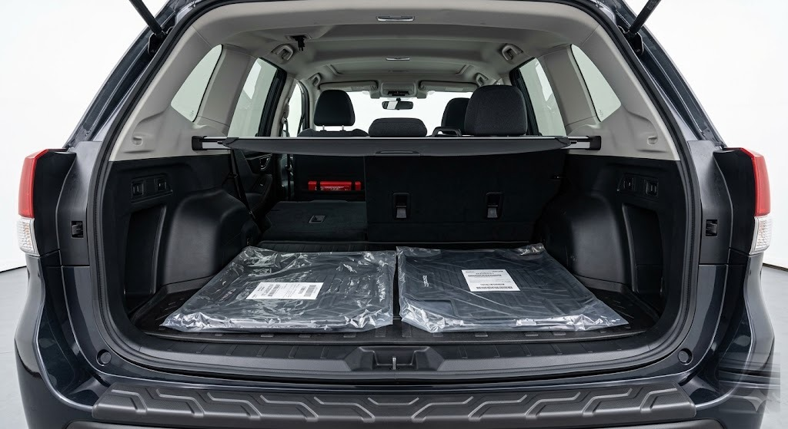
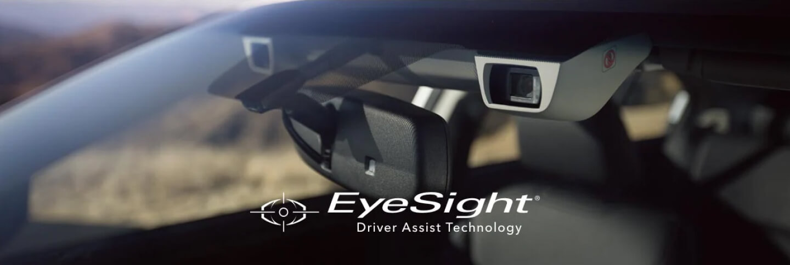

The 2026 Forester wins on standard AWD, 8.7 in ground clearance, and EyeSight on every trim. The 2026 CR-V wins on rear cargo and hybrid MPG.
For Las Vegas families who want one SUV for desert commutes, Mt. Charleston weekends, and 110-degree summers — the Forester is the more capable platform.
FINDLAY SUBARU OF LAS VEGAS · FORESTERA Subaru Forester at Findlay Subaru of Las Vegas, the standard-AWD compact SUV positioned for Las Vegas families who split time between desert highway and Mt. Charleston weekends.
01The spec sheet
Head-to-head specs at a glance.
Winner by category, the quick read for cross-shoppers who want the answer before the table.
Standard AWD: Forester. Subaru Symmetrical AWD is standard on every trim; the CR-V offers AWD as an option. Ground clearance: Forester at 8.7 in vs 8.2 in. Cargo behind rear seats: CR-V publishes more cubic feet behind the second row. Hybrid fuel economy: CR-V Hybrid leads the segment on EPA combined MPG. Standard driver-assist: Forester ships EyeSight on every U.S. trim. Safety rating: tie, both nameplates have earned IIHS Top Safety Pick or Top Safety Pick+ in recent years.
Confirm trim-level numbers against Subaru.com and Automobiles.Honda.com before you sign anything. Both brands adjust trims and option packages mid-model-year. Call Sales at 725-245-1156 for the current numbers on a specific Forester trim.
2026 Subaru Forester vs 2026 Honda CR-V
Factor
Forester2026 Subaru
CR-V2026 Honda
Standard drivetrain
Symmetrical AWD (standard, all trims)
FWD standard; AWD optional
Engine (non-hybrid)
2.5L horizontally opposed 4-cylinder
1.5L turbocharged inline-4
Hybrid available
Confirm 2026 Forester Hybrid trim at subaru.com
Yes (CR-V Hybrid trims)
Transmission
Lineartronic CVT
CVT
Ground clearance
8.7 in
8.2 in
Standard driver-assist
EyeSight (standard, all trims)
Honda Sensing (standard, all trims)
Cargo behind rear seats
Confirm at subaru.com
Confirm at automobiles.honda.com
Max cargo, seats folded
Confirm at subaru.com
Confirm at automobiles.honda.com
Max towing
Confirm at subaru.com
Confirm at automobiles.honda.com
Powertrain warranty
5 yr / 60,000 mi
5 yr / 60,000 mi
Bumper-to-bumper warranty
3 yr / 36,000 mi
3 yr / 36,000 mi
Base MSRP (national)
Confirm at subaru.com
Confirm at automobiles.honda.com
Family + standard-AWD pick
Forester
2026 Subaru
Drivetrain
Symmetrical AWD, standard every trim
Engine
2.5L horizontally opposed 4-cylinder
Transmission
Lineartronic CVT
Ground clearance
8.7 in
Driver-assist
EyeSight (standard)
Powertrain warranty
5 yr / 60,000 mi
Bumper-to-bumper
3 yr / 36,000 mi
Cargo + hybrid-MPG pick
CR-V
2026 Honda
Drivetrain
FWD standard; AWD optional
Engine
1.5L turbocharged inline-4 (Hybrid available)
Transmission
CVT
Ground clearance
8.2 in
Driver-assist
Honda Sensing (standard)
Powertrain warranty
5 yr / 60,000 mi
Bumper-to-bumper
3 yr / 36,000 mi
Two honest reads on that table. AWD: the Forester arrives with Symmetrical AWD already installed on every trim, while a base CR-V is front-wheel drive unless AWD was specifically optioned. Cargo and hybrid MPG: Honda wins on published cubic feet behind the second row and leads the segment on hybrid combined MPG. We lead with the standard-AWD difference because for a Las Vegas family that splits time between desert highway and Mt. Charleston weekends, that's the spec that changes the buying decision.
Spec disclosure · Sources: Subaru of America (subaru.com), American Honda Motor Co. (automobiles.honda.com), accessed June 2026. Manufacturers periodically refresh trim packaging and EPA figures, so any number used on a deal sheet should be re-pulled at the time of purchase. Call 725-245-1156 for current numbers on a specific Forester trim.
02The AWD systems
AWD capability: Symmetrical AWD vs Real Time AWD.
Subaru's Symmetrical AWD is mechanical, full-time, and standard on every Forester.
The engine sits longitudinally and driveshafts run equal lengths to the front and rear differentials. A Forester arrives at the dealer with AWD already installed. There is no FWD base trim.
Honda's CR-V AWD is Real Time AWD with Intelligent Control. It is front-wheel-drive biased and engages the rear axle when sensors detect front-wheel slip. AWD is optional. A buyer who orders the base FWD trim has a front-wheel-drive vehicle.
StandardForester
Symmetrical AWD
Mechanical, full-time. Driveshafts split power to four wheels — standard on every trim.
OptionalCR-V
Real Time AWD
Front-biased, on-demand. Rear axle engages when sensors detect front slip — optional package.
8.7 inForester
Ground clearance
Half inch over 8.2 in. Matters on washboard fire roads and rutted Red Rock approaches.
CityEither
Daily Vegas commute
Both work. FWD CR-V handles Sahara or Maryland Parkway — paved roads don't need AWD.
Mt. CharlestonForester
Snow + dirt routes
Ready out of the box. Mt. Charleston snow or a Zion winter trip shifts the calculation.
Option boxCR-V
If AWD wasn't ordered
It's not there. A CR-V buyer who didn't option AWD has a front-wheel-drive vehicle.
For Las Vegas drivers the AWD question splits two ways: paved Clark County roads don't require it, but Mt. Charleston in snow, Red Rock after rain, or a winter trip to Zion changes the calculation in the Forester's favor.
Las Vegas summers regularly post afternoon highs above 110°F. The 89118 ZIP where Findlay Subaru of Las Vegas sits records lot surface temperatures well above ambient.
110°F+
Vegas summer afternoon high
2.5L
Forester boxer, OEM limits
1.5L
CR-V turbo, OEM limits
30 min
Sun-soak cabin cooldown test
What actually matters in 110-plus heat
Cooling system load. Both the Forester's 2.5L boxer and the CR-V's 1.5L turbo are designed to stay within OEM coolant-temperature ranges in 110-plus-degree heat.
Owner-reported reliability in extreme heat. Varies by year, trim, and maintenance discipline more than by brand. Treat single-forum threads as one data point, not a verdict.
Cabin cooldown. Both vehicles offer remote-start equipped trims and tinted glass on higher trims. A fair test you can run yourself: let each soak 30 minutes in direct sun, then time cooldown from start to comfortable cabin temperature.
Tire wear. Heat shortens tire life regardless of brand. Plan on shorter replacement intervals than the national average.
12-volt battery life. Vegas heat takes years off published battery service life. Expect to replace earlier than a Pacific Northwest owner.
Paint and interior. UV-stable cabin materials and ceramic-coat-friendly paint hold up better. Garage when you can.
Any compact SUV sold for the U.S. market is engineered to operate in this environment, but a few categories matter more in the desert than in milder climates. The honest read: brand isn't the differentiator — maintenance discipline is.
How Findlay's service team helps after the sale
Findlay Subaru's service team at 6455 Roy Horn Way handles Subaru-specific rotations, alignments, and Express Service intervals on a schedule built for the Mojave climate. Book at subaruoflasvegas.com/service or call Service at 725-677-3193.
Service hours: Monday–Friday 7 AM to 6 PM, Saturday 7 AM to 5 PM. Closed Sunday.
04Cargo & family fit
Cargo space and family fit.
CR-V publishes more cubic feet, Forester is easier to load. The right answer depends on what you actually carry.
The CR-V's hatchback profile sits slightly more upright than the Forester's in current generations, and Honda publishes more cubic feet behind the second row. The Forester counters with strong rear-seat headroom and a low load floor that makes car seats, dogs, and bulky strollers easier to load.
For a Practical Family Stabilizer in Las Vegas, the cargo question usually comes down to four real-world tests, not a published-volume bake-off.
Four real-world cargo tests
Two kids in car seats plus a stroller and a grocery run. Either vehicle handles it. The CR-V wins on paper cubic feet. The Forester wins on load-in ergonomics — that low load floor matters when you're lifting a sleeping toddler in a car seat.
Bike rack weekend at Cottonwood Valley. Both accept hitch-mounted bike racks. Confirm 2026 tow ratings for both vehicles before recommending hitch-mounted cargo — the CR-V's hybrid trims in particular have a lower published rating than the gas trims.
Costco run plus three passengers. Either vehicle handles it. The CR-V's hatch favors tall items. The Forester's wider tailgate opening is easier in tight Las Vegas Costco parking lots where the car next to you parked at a creative angle.
Las Vegas to San Diego with luggage for four. Both handle it. Subaru's standard roof rails on most trims are a small Forester advantage for cargo boxes and cross bars, especially on a road trip with bikes, paddleboards, or a rooftop tent.

FINDLAY SUBARU OF LAS VEGAS · FORESTER CARGOThe Subaru Forester cargo bay with the tailgate raised, showing the low load floor and wide tailgate opening that make car seats, strollers, and Costco runs easier to load.
Headroom, sightlines, and family ergonomics
The Forester's tall greenhouse and large windows give rear-seat passengers more vertical space and easier sightlines — useful when one of those passengers is a kid who gets carsick on the I-15 climb to Mt. Charleston. The CR-V's roofline is slightly more raked at the rear, which helps published cargo volume but trims a small amount of rear-seat headroom on taller adults.
The honest summary: CR-V publishes more cubic feet, Forester is easier to load. The right answer depends on what you actually carry — and how often you're carrying it with one hand while holding a kid with the other.
Warranty parity, then service paper trail
Subaru's New Vehicle Limited Warranty runs 3 years or 36,000 miles bumper-to-bumper, with the powertrain at 5 years or 60,000 miles. Honda's CR-V coverage matches. None of that requires servicing exclusively at a Subaru retailer, but documented OEM-spec service is the cleanest paper trail you can have. Findlay Subaru of Las Vegas is a Certified Subaru Eco-Friendly Retailer, and Subaru of America named us their 2023 Subaru Love Promise Retailer of the Year.
05The safety story
Safety: EyeSight vs Honda Sensing.
Both suites are mature and feature-comparable at the standard-equipment level. The differentiator on any specific vehicle is calibration and condition.
EyeSight is Subaru's stereo-camera driver-assist suite, standard on every 2026 Forester. It includes pre-collision braking, adaptive cruise control, lane-departure warning, lane-keep assist, and lead-vehicle start alert.
Honda Sensing is standard on every 2026 CR-V. It combines camera and radar inputs and includes Collision Mitigation Braking, Road Departure Mitigation, Adaptive Cruise Control, Lane Keeping Assist, and traffic sign recognition.
How the architectures differ
EyeSight uses two cameras that triangulate distance the same way human stereo vision does. The cameras live behind the windshield, which is why a windshield replacement requires a recalibration before EyeSight will trust what it sees again. Honda Sensing pairs a single forward camera with millimeter-wave radar; the camera handles lane geometry and sign recognition while the radar handles distance to the vehicle ahead.
Both architectures work. Both have well-documented strengths and well-documented edge cases. At the feature-set level the two suites are comparable for most family use cases — the brand decision shouldn't hinge on the suite name alone.

FINDLAY SUBARU OF LAS VEGAS · EYESIGHTThe forward area of a Subaru Forester where the EyeSight stereo cameras live behind the windshield — the placement that makes a clean windshield and a current calibration the practical safety variables, not the brand name on the badge.
IIHS and NHTSA ratings
Both nameplates have earned IIHS Top Safety Pick or Top Safety Pick+ designation in recent model years. NHTSA five-star overall ratings have been awarded to recent model years of both vehicles. Pull the specific 2026 model-year IIHS designation for Forester and CR-V from iihs.org at the time of purchase, and verify the current 2026 NHTSA figure at nhtsa.gov.
The practical safety variable in Las Vegas
For Las Vegas families, the practical safety differentiator is not the suite name. It is whether the vehicle being shopped has the suite activated, the windshield clean (EyeSight lives behind the windshield), and the calibration current. A Findlay Subaru technician can confirm EyeSight calibration during any scheduled service visit at 725-677-3193.
06Five-year math
Total cost of ownership and Las Vegas pricing.
A five-year ownership window in Clark County combines purchase price, financing cost, fuel, scheduled maintenance, insurance, and resale value.
5 yr
TCO window in Clark County
24 hr
Same-day financing approval
100 mi
Home delivery from 89118
24/7
Express Store online pricing
The cost-of-ownership framework
Purchase price. Confirm 2026 base MSRP for both Forester and CR-V at subaru.com and automobiles.honda.com — both brands move trims and packages mid-year.
Financing. Subaru Motors Finance and Honda Financial Services both publish national APR offers that move month to month. Local Forester financing runs through Findlay's office at 6455 Roy Horn Way, with same-day financing approval as a published differentiator.
Fuel. EPA combined MPG falls in the same range on non-hybrid trims. CR-V Hybrid leads on combined MPG. Pull 2026 EPA combined MPG per trim from fueleconomy.gov at the time of purchase.
Maintenance. Both brands publish similar interval guides. Subaru Express Service at Findlay covers routine maintenance with documented records, complimentary car wash, available loaner vehicles, and early-drop-off plus 24/7 secure key locker access.
Insurance. Compact SUV insurance rates in Clark County are not dramatically different between these two nameplates for comparable trims. Driver profile moves the number more than the badge.
Resale. Both hold residual value well in the segment. Pull current ALG or KBB resale percentile for 2026 Forester vs 2026 CR-V at the time of purchase.
Net read: five-year TCO is closer than most shoppers expect. Trim choice and financing rate move the number more than the badge on the grille.
Las Vegas market pricing
Out-the-door pricing at any Las Vegas dealer reflects national MSRP plus destination, dealer documentation fee, Nevada DMV fees, and any active manufacturer or dealer incentives. Confirm current Las Vegas out-the-door pricing for the 2026 Forester at Findlay Subaru of Las Vegas with the sales team, and pull a written quote from a cross-shopped Honda dealer for the 2026 CR-V before you compare.
Findlay Subaru of Las Vegas operates an Express Store with instant upfront pricing and a complete-from-home buying flow plus home delivery within 100 miles of 89118. Buyers who want a clean comparison can pull an Express Store quote on a 2026 Forester and a written quote from a Honda store on a 2026 CR-V, then compare line-for-line with destination and doc fee on the same line.
In person: 6455 Roy Horn Way, Las Vegas, NV 89118.
07The decision matrix
Decision matrix and bottom line.
If two priorities tie at the top of your list, weight the standard-equipment story. A standard feature is one less option box and one less negotiation.
Your top priority
Vehicle that wins on paper
Why
Standard AWD with no option box
Forester
Symmetrical AWD standard on every trim
Maximum hatch cargo volume
CR-V
More published cu ft behind second row
Best hybrid combined MPG
CR-V Hybrid
Honda hybrid trims lead the segment
Highest ground clearance
Forester
8.7 in vs 8.2 in
Trips to Mt. Charleston, Red Rock, Zion
Forester
Standard AWD + 8.7 in clearance
Standard driver-assist at every price point
Tie
EyeSight standard, Honda Sensing standard
Lowest 5-yr cost of ownership
Run a quote both ways
Trim and finance rate matter more than badge
Buying experience close to 89118
Forester at Findlay
Express Store + 100-mile home delivery
Bottom line
For a Practical Family Stabilizer in Las Vegas, Henderson, or Pahrump who wants one SUV that handles the school run, the desert summer, the Mt. Charleston winter, and the road trip to Zion without juggling option boxes, the 2026 Subaru Forester is the more capable platform. Standard AWD, 8.7 inches of ground clearance, and EyeSight on every trim are not small things. The 2026 Honda CR-V is the right answer if maximum hatch cargo or class-leading hybrid MPG is the single top criterion.
To put a Forester in your driveway with same-day financing, a personalized video walkaround, or home delivery within 100 miles of 89118, the Findlay Subaru of Las Vegas team is at 6455 Roy Horn Way. Sales line: 725-245-1156.
The valley's Subaru retailer since the early 1970s.
Findlay Automotive Group founded 1971 — 55 years in business. Authorized Subaru retailer at 6455 Roy Horn Way, Las Vegas, NV 89118. General Manager Burton Hughes; General Sales Manager Scott McCoy.
2026
Subaru Love Promise Heart Award
2023
Subaru Love Promise Retailer of the Year
100 mi
Free home delivery radius from 89118
4.7 / 5
Across 3,449 Google reviews
Leadership
Burton Hughes · General Manager.
Scott McCoy · General Sales Manager.
Part of Findlay Automotive Group (founded 1971, 55 years in business).
Authorized Subaru of America retailer serving Las Vegas, Henderson, Pahrump, North Las Vegas, Boulder City, and Summerlin.
What you can expect
Express Store with instant upfront pricing online. Same-day financing approval. Personalized video walkaround on request.
Home delivery within 100 miles of 89118. Complete-from-home buying flow if you don't want to come in.
Six Subaru program designations: Eco-Friendly Retailer, Express Service, Certified Pre-Owned, TradeUp Advantage, Love-Encore, Subaru Parts Online.
Frequently asked questions about Forester vs CR-V.
Is the Subaru Forester better than the Honda CR-V?
The Forester is the better overall match for buyers who want standard AWD, higher ground clearance, and EyeSight on every trim. The CR-V is the better match for buyers whose top priority is maximum rear cargo volume or class-leading hybrid combined MPG.
Both vehicles earn comparable safety ratings and both hold residual value well in the compact SUV segment. For a Las Vegas family that splits time between desert highway and Mt. Charleston weekends, the Forester's standard AWD plus 8.7 in ground clearance is the spec that usually decides it.
Which is more reliable, the Forester or the CR-V?
Both have ranked among the more reliable compact SUVs over recent model years. Consumer Reports publishes a model-year-specific predicted reliability score for each vehicle.
Treat any single-year reliability rating as one data point alongside maintenance history and trim choice. A well-maintained example of either nameplate is a more reliable vehicle than a neglected example of the other.
Does the Forester come standard with AWD?
Yes. Subaru's Symmetrical AWD is standard on every Forester trim sold for the U.S. market. There is no FWD Forester.
The CR-V offers AWD as an option, with FWD as the standard base configuration. If you're cross-shopping a CR-V, confirm the build sheet shows AWD before you sign — it's a small line item that becomes a big spec on a Mt. Charleston ski weekend.
Is the Honda CR-V better in Las Vegas heat?
Neither vehicle is designed specifically for desert heat. Both are certified by the manufacturer to operate within published thermal limits in U.S. climates including the desert Southwest.
Owner-reported reliability in extreme heat varies by year, trim, and maintenance discipline more than by brand. The single biggest variable in a 110°F summer is whether the cooling system is on its OEM-recommended service interval.
Where can I test drive a 2026 Subaru Forester in Las Vegas?
Findlay Subaru of Las Vegas is at 6455 Roy Horn Way, Las Vegas, NV 89118. Sales hours: Monday through Saturday 8 AM to 8 PM, closed Sunday. Sales: 725-245-1156. Service: 725-677-3193. Parts: 725-677-1316.
The dealer operates an Express Store with instant upfront pricing and home delivery within 100 miles, and holds the Subaru Love Promise 2026 Heart Award and the 2023 Love Promise Retailer of the Year designation.
What is the difference between Subaru EyeSight and Honda Sensing?
Both are standard driver-assist suites. EyeSight uses a stereo-camera architecture behind the windshield. Honda Sensing uses a camera-plus-radar combination. Both include pre-collision braking, adaptive cruise control, and lane-keep functions.
At the feature-set level the two suites are comparable for most family use cases. The practical question on any specific vehicle is whether the system is calibrated, the windshield clean, and the software current.
09Provenance
Sources & references
Last reviewed by the Findlay Subaru of Las Vegas editorial team · May 12, 2026
About the author
Findlay Subaru of Las Vegas editorial team
Reviewed by the Sales Manager. Findlay Subaru of Las Vegas is an authorized Subaru retailer at 6455 Roy Horn Way, Las Vegas, NV 89118, part of Findlay Automotive Group (founded 1971, 55 years in business). 4.7-star Google rating from 3,449 customer reviews. Subaru Love Promise 2026 Heart Award.
General Manager Burton Hughes · General Sales Manager Scott McCoy
Specifications and capability claims cross-checked against Subaru of America (subaru.com) and American Honda Motor Co. (automobiles.honda.com) accessed June 2026. Trim packaging, EPA figures, and incentives change mid-model-year, so any number used on a deal sheet should be re-pulled at the time of purchase. For a current quote on a 2026 Forester, call Sales at 725-245-1156.
A note on bottom line: for a Practical Family Stabilizer in Las Vegas, Henderson, or Pahrump who wants one SUV that handles the school run, the desert summer, the Mt. Charleston winter, and the road trip to Zion without juggling option boxes, the 2026 Forester is the more capable platform. The 2026 CR-V is the right answer if maximum hatch cargo or class-leading hybrid MPG is the single top criterion.